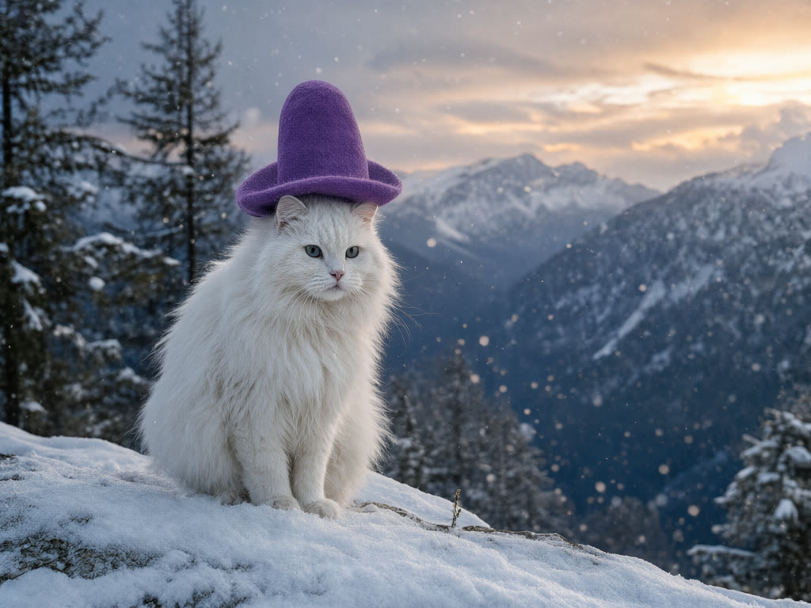
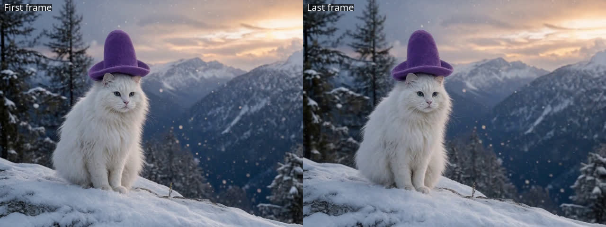

Lesson 1.1
A camera move is a learnable effect
MiniMax-H3's reference-to-video mode (Ref2VA) takes up to a few reference pictures and a caption and writes a video with sound. ORB360 is a rank-32 LoRA for it that teaches one camera move: a clockwise orbit at a constant distance that ends exactly where it began, with the subject frozen. Every training clip was rendered in Blender, so the camera's true position is known for every frame. That's what makes the orbit measurable later.


The orbit LoRA never saw a real-looking image or a real scene in training, yet it kept the ridge, the pines and the sky all the way round. It did one thing the caption didn't ask for: this orbit is at the image's own height, roughly eye level. Getting the camera to go higher or lower than the image is the next two sections.
Reproduce with a coding agentgenerate the orbit
# musubi-tuner (kohya-ss) v0.3.5+, MiniMax-H3 Ref2VA weights, LoRA from huggingface.co/MATLOWAI/MiniMax-H3-ORB360-CardSpin python src/musubi_tuner/minimax_h3_generate_video.py --task ref2va \ --dit minimax_h3_ref2va_bf16.safetensors --prune_adaln \ --video_vae minimax_h3_video_vae_fp16.safetensors --audio_vae minimax_h3_audio_vae_fp32.safetensors \ --text_encoder qwen3vl_32b_minimax_h3_int8_convrot.safetensors --text_encoder_attn_mode sdpa \ --lora_weight minimax_h3_orb360_step1500.safetensors --lora_multiplier 1.0 --lora_runtime_attach \ --video_size 768 1024 --video_length 124 --infer_steps 20 --attn_mode sdpa --seed 20260926 \ --prompt "$(cat prompts/orbit_realscene_caption.txt)" --ref photo.png --save_path out/
Agent prompt
Generate one 124-frame, 24 fps orbit with the ORB360 step-1500 LoRA from a single reference image, using the model card's real-scene orbit caption unchanged. Keep the raw MP4, the exact command, the seed and the LoRA hash next to it. Before using it for 3D, check by eye that it completes one turn, shows the back, never reverses, and that the last frame matches the first.